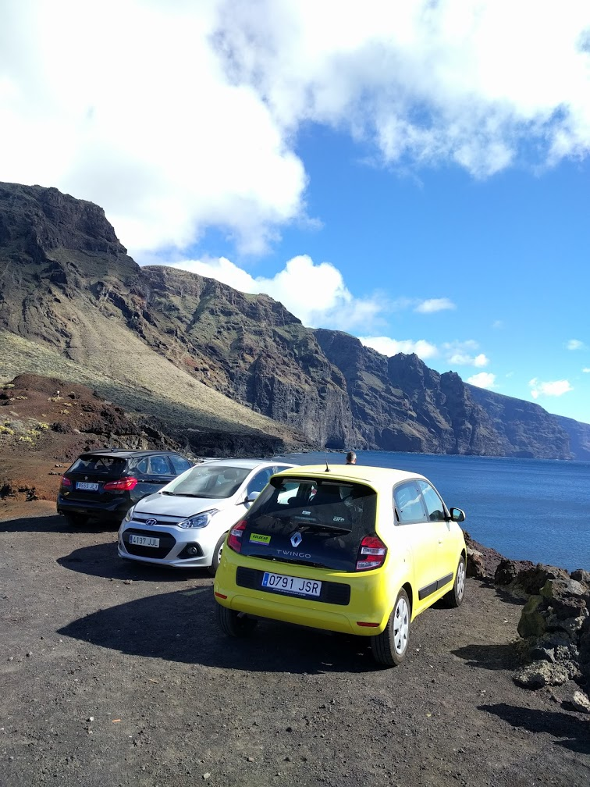

Автор рассказывает, что Тесла это вечный автомобиль! (Этот текст отличается)>
В 1953 году американский фантаст Клиффорд Саймак опубликовал роман «Кольцо вокруг Солнца». Сюжет его прост: некая группа лиц ставит себе целью разрушение мировой экономики с целью создания массовой безработицы, провоцирующей миграцию людей в другие миры. Поэтому они выводят на авторынок вечмобили — «вечные автомобили». Для них не ведется никакой рекламной кампании: «нет лучшей рекламы, чем слухи...» Думающие граждане немедленно сообразили: появление вечмобиля означало, что закроются все автомобильные заводы, большинство гаражей и ремонтных мастерских. Это нанесет серьезный удар по сталелитейной промышленности, и сотни тысяч людей лишатся работы.
По странному совпадению, c 2012 года компания Tesla начала производство машин, у которых оказался довольно большой ресурс. Комплект электродвигателей и трансмиссии Model 3 прошел 1,6 млн км, крутясь на испытательном стенде с переменной нагрузкой, имитирующей самые разные условия. Это эквивалентно 80 годам пробега для среднего автовладельца. И это больше, чем в принципе может пройти серийный двигатель внутреннего сгорания или его трансмиссия. Те же блоки моторов и трансмиссий стоят на электрофурах Tesla Semi, которые начнут выпускаться в 2019 году. Согласно статистике 2018 года, батарея «теслы» сохраняет 90% емкости после 300 000 км пробега (~15 лет для пользователя, не являющегося таксистом), после чего потеря емкости замедляется. По результатам стендовых тестов производителя, более 80% емкости сохранится и после 800 000 км пробега (~40 лет, если пользователь не таксист).
Почему так — понять несложно. Tesla первой в мировой практике сделала электромобиль с жидкостным охлаждением батареи, что позволило не только отапливать машину без лишних трат энергии (батарея при работе нагревается), но и быстро заряжать и разряжать аккумуляторы без перегрева, вносящего главный вклад в износ литиевых накопителей.
Стоит напомнить, что Tesla, так же как и ее предшественники из научной фантастики, не тратит ни доллара на рекламу, считая, что «нет лучшей рекламы, чем слухи». Разница с романом 1953 года только в том, что главный канал распространения таких слухов — соцсети и твиттер самого Илона Маска.
Tesla настолько близка к вечмобилю, насколько реальный автомобиль сегодня вообще может быть к нему близок. Большинство их водителей банально не проживут так долго, чтобы увидеть конец жизненного пути своего авто. Неплохой способ устроить массовую безработицу: с учетом того, что в электромобиле меньше деталей, для их выпуска понадобится намного меньше рабочих.
Что самое неприятное — потребитель выбирает «теслы» вообще не за их ресурс. Сегодня не существует бензиновых машин с таким же сочетанием динамики и размера салона, как у Tesla Model 3. И сомнительно, что они вообще возможны: электромоторы компактнее, поэтому электромобиль имеет больше места, а короткий капот позволяет увеличить и длину салона. В теории ДВС-мобиль может иметь те же размеры, но тогда его придется делать длиннее и дороже, либо «ужимать» двигатель. Он может иметь лучшую динамику, но для этого ему надо иметь двигатель суперкара и цену суперкара. Все это означает, что Daimler, BMW, Audi и Lexus должны сильно пострадать от американского новичка.
Именно это и происходит: в 2017 году Model S обогнала Mercedes S-class, BMW 7-й серии и Аudi A8 в своей ценовой категории в Европе. Причем если у Model S европейские продажи за прошлый год выросли на 30%, то у BMW 7-й серии — упали на 13%. Tesla пожирает европейские марки заживо на их собственном рынке, а в Штатах процесс идет еще быстрее. В 2018 году Мodel S там опять показала рост продаж, в то время как продажи Cadillac XTS просели на 27%, Mercedes S-class — на 16%. Само собой, ценовых одноклассников Model 3 обошла куда сильнее, чем бюджетную Toyota Corolla. Tesla пока и на домашнем рынке не может удовлетворить спрос даже на самые дорогие модификации своей новой машины. Поэтому в Европу и КНР она пойдет только в следующем году, тогда же и начнет продажи базовой версии Model 3.
Tesla не просто намерена ударить по традиционным автопроизводителям, а уже это сделала. Ее продажи в США в сентябре 2018 года в штуках выросли на 563,6% по сравнению с сентябрем прошлого года. А у Mercedes-Benz — упали на 15,6%. И это только начало. В следующем году выпуск той же Model 3 удвоится. В 2020 году будет запущен кроссовер на той же платформе. К 2023 году планируется запуск в производство еще более дешевого «тесламобиля» по цене от $25 000.
«Теслы» бьют по мировой экономике даже сильнее «вечмобилей» Саймака. Дело в том, что фантаст 1953 года не мог себе представить успешную машину без ДВС, поэтому вечмобили у него заправлялись бензином. Tesla не просто продает электромобили — она еще и устанавливает солнечные батареи на крыши домов. К весне 2018 года они выработали 10,3 миллиарда киловатт-часов. Это равно годовому потреблению 3,4 млн Model 3 (при пробеге 20 000 км в год у каждой). На сегодня Tesla выпустила куда меньше электромобилей. Таким образом, эта компания не просто давит своих конкурентов среди автопроизводителей, но и наносит большой удар по нефтедобыче. За свой жизненный цикл каждая из ее машин сэкономит не менее 80 000 литров бензина — то есть сократит спрос на нефть на сумму, которая больше ее стоимости.
Автор рассказывает, что Тесла это вечный автомобиль! (Этот текст отличается)>
Автор рассказывает, что Тесла это вечный автомобиль! (Этот текст отличается)>